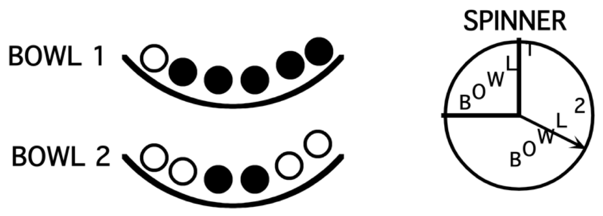

Chapter 3 Conditional Probability
3.1 Introduction: The Three Card Problem
Suppose one has three cards – one card is blue on both sides, one card is pink on both sides, and one card is blue on one side and pink on the other side. Suppose one chooses a card and place it down showing “blue”. What is the chance that the other side is also blue?
This is an illustration of a famous conditional probability problem. One is given certain information – here the information is that one side of the card is blue – and one wishes to determine the probability that the other side is blue.
Most people think that this probability is 1/2, but actually this is wrong. The correct answer is demonstrated by simulating this experiment many times. One can do this simulation by hand, but we will illustrate this using an R script.
Suppose one thinks of this experiments are first choosing a card, and then choosing a side from the card. There are three possible cards, which we call “Blue”, “Pink” and “mixed”. For the blue card, there are two blue sides; for the pink card, there are two pink sides, and the “mixed” card has a blue side and a pink side.
Conditional Probabilities by Simulation
We illustrate using R to perform this simulation. A data frame df with two variables Card and Side is defined.
The sample() function randomly chooses a card and a side by choosing a random row from the data frame. This experiment was repeated 1000 times and the table() function is used to classify the outcomes by card and side.
df <- data.frame(Card = c("Blue", "Blue",
"Pink", "Pink",
"Mixed", "Mixed"),
Side = c("Blue", "Blue",
"Pink", "Pink",
"Blue", "Pink"))
cards <- df[sample(6, size = 1000, replace = TRUE), ]
table(cards$Card, cards$Side)##
## Blue Pink
## Blue 346 0
## Mixed 162 164
## Pink 0 328One observed “side is blue” and one are interested in the probability of the event “card is blue”. In this experiment, the blue side was observed 326 + 173 = 499 times – of these, the card was blue 326 times. So the probability the other side is blue is approximated by 326 / 499 which is close to 2/3. This example illustrates that one’s intuition can be faulty in figuring out probabilities of the conditional type.
Selecting Slips of Paper
To illustrate the conditional nature of probabilities, suppose one has a box that has 6 slips of paper – the slips are labeled with the numbers 2, 4, 6, 8, 10, and 12. One selects two slips at random from the box. It is assumed that one is sampling without replacement and the order that one selects the slips is not important. Then one lists all of the possible outcomes. Note that since two numbers are chosen from six, the total number of outcomes will be \(_6 C_2 = 15\).
\(S\) = {(2, 4), (2, 6), (2, 8), (2, 10), (2, 12), (4, 6), (4, 8), (4, 10), (4, 12) (6, 8), (6, 10), (6, 12), (8, 10), (8, 12), (10, 12)}.
Suppose one are interested in the probability the sum of the numbers on the two slips is 14 or higher. Assuming that the 15 outcomes listed above are equally likely, one sees there are 9 outcomes where the sum is 14 or higher and so \[ Prob({\rm sum} \, 14 \, {\rm or} \, {\rm higher}) = \frac{9}{15}. \]
Next, suppose one is given some new information about this experiment – both of the numbers on the slips are single digits. Given this information, one now has only six possible outcomes. This new sample space is called the reduced sample space based on the new information.
\(S\) = {(2, 4), (2, 6), (2, 8), (4, 6), (4, 8), (6, 8)}
One evaluates the probability \(Prob\)(sum is 14 or higher) given that both of the slip numbers are single digits. Since there is only one way of obtaining a sum of 14 or higher in our new sample space, one sees \[ Prob({\rm sum} \, 14 \, {\rm or} \, {\rm higher}) = \frac{1}{6}. \]
Notation: Suppose that \(E\) is our event of interest and \(H\) is our new information. Then one writes the probability of \(E\) given the new information H as \(Prob(E \mid H)\), where the vertical line “\(|\)” means “conditional on” or given the new information. Here it was found
\(Prob\)(sum is 14 or higher $ | $ both slip numbers are single digits).
How does the probability of “14 or higher” change given the new information? Initially, the probability of 14 and higher was pretty high (9/15), but given the new information, the probability dropped to 1/6. Does this make sense? Yes. If one is told that both numbers are single digits, then one has drawn small numbers and that would tend to make the sum of the digits small.
3.2 Independent Events
One says that events \(A\) and \(B\) are independent if the knowledge of event \(A\) does not change the probability of the event \(B\). Using symbols \[\begin{equation} P(B \mid A) = P(B). \tag{3.1} \end{equation}\]
Rolls of Two Dice
To illustrate the concept of independence, consider an example where one rolls a red die and a white die – the 36 possible outcomes of rolling the two dice are shown in the following table.
| One | Two | Three | Four | Five | Six | ||
| One | x | x | x | x | x | x | |
| Two | x | x | x | x | x | x | |
| White Die | Three | x | x | x | x | x | x |
| Four | x | x | x | x | x | x | |
| Five | x | x | x | x | x | x | |
| Six | x | x | x | x | x | x |
Consider the following three events:
- \(S\) = the sum of the two rolls is 7
- \(E\) = the red die is an even number
- \(D\) = the rolls of the two dice are different
Are events \(S\) and \(E\) independent?
First one finds the probability one rolls a sum equal to 7, that is, \(P(S)\). There are 36 outcomes and 6 outcomes results in a sum of 7, so \(P(S) = 6 / 36\).
Next, one finds \(P(S \mid E)\). Given that the red die is an even number (event \(E\)), note that there are 18 outcomes where \(E\) occurs. Of these 18 outcomes, there are 3 outcomes where the sum is equal to 7. So \(P(S \mid E) = 3 / 18\).
Note \(P(S \mid E) = P(S)\), so events \(S\) and \(E\) are independent. Knowing the red die is even does not change one’s probability of rolling a 7. \end{enumerate}
Are events \(S\) and \(D\) independent?
To see if these two events are independent, one computes \(P(S \mid D)\) and checks if \(P(S \mid D) = P(S)\). One can show that \(P(S \mid D) = 6 / 30\). This probability is not equal to \(P(S)\) so \(S\) and \(D\) are not independent events.
Conditional Probabilities by Simulation
One can demonstrate conditional probability by the use of the filter() function in the dplyr package. To illustrate, a data frame df is constructed with simulated rolls of two dice – the associated variables are Roll_1 and Roll_2.
df <- data.frame(Roll_1 = sample(6, size = 1000,
replace = TRUE),
Roll_2 = sample(6, size = 1000,
replace = TRUE))The mutate() function is used to define a new variable Sum that is the sum of the two rolls. Suppose one is told that the roll of the first die is greater than 3 – how does that information change the probabilities for Sum? In the following script, the filter() function is used to restrict die rolls to only the ones where Roll_1 > 3. Then the frequencies and corresponding approximate probabilities of different sums are found on these “restricted” die rolls. For example, one sees that the probability \(Prob({\rm Sum} = 10 | {\rm Roll\_1} > 3) \approx 0.164\).
library(dplyr)
df %>%
mutate(Sum = Roll_1 + Roll_2) %>%
filter(Roll_1 > 3) %>%
group_by(Sum) %>%
summarize(Count = n()) %>%
mutate(Probability = Count / sum(Count))## # A tibble: 8 x 3
## Sum Count Probability
## <int> <int> <dbl>
## 1 5 18 0.0367
## 2 6 53 0.108
## 3 7 75 0.153
## 4 8 95 0.193
## 5 9 94 0.191
## 6 10 80 0.163
## 7 11 52 0.106
## 8 12 24 0.04893.3 In Everyday Life
Generally one’s beliefs about uncertain events can change when new information is obtained. Conditional probability provides a way to precisely say how one’s beliefs change. Let’s illustrate this with a simple example.
Suppose one is interested in estimating the population of Philadelphia, Pennsylvania in the current year. Consider three possible events:
- \(A\) = Philadelphia’s population is under one million
- \(B\) = Philadelphia’s population is between one and two million
- \(C\) = Philadelphia’s population is over two million
If one knows little about Philadelphia, then one probably are not very knowledgeable about its population. So initially the probabilities are assigned shown in Table 3.1.
Table 3.1. Initial probabilities of events about Philadelphia’s population.
| Event | \(P(Event \mid I)\) |
|---|---|
| under one million | 0.3 |
| between one and two million | 0.3 |
| over two million | 0.4 |
| TOTAL | 1.0 |
One is assigning approximately the same probability to each of the three events, indicating that they are all equally likely in his or her mind. These can be viewed as conditional probabilities since they are conditional on one’s initial information – these probabilities are denoted by \(P(Event \mid I)\), where \(I\) denotes one’s Initial information.
Now suppose some new information is provided about Philadelphia’s population. One is not told the current population, but the person is told that in 1990, Philadelphia was the fifth largest city in the country, and the population of the sixth largest city, San Diego, was 1.1 million in 1990. So this tells one that in 1990, the population of Philadelphia had to exceed 1.1 million. Now one might not be sure about how the population of Philadelphia has changed between 1990 and 2020, but it probably has not changed a significant amount. So one thinks that
- The population of Philadelphia is most likely to be between 1 and 2 million.
- It is very unlikely that Philadelphia’s population is over 2 million.
- There is a small chance that Philadelphia’s population is under 1 million.
One then revise his or her probabilities that reflect these beliefs as shown in the table below. These probabilities are denoted as \(P(Event \mid N)\), which are probabilities of these population events conditional on the newer information \(N\), in Table 3.2.
Table 3.2. Probabilities of events about Philadelphia’s population given new information.
| Event | \(P(Event \mid N)\) |
|---|---|
| under one million | 0.2 |
| between one and two million | 0.78 |
| over two million | 0.02 |
| TOTAL | 1.0 |
Now, additional information is provided. To find the current population of Philadelphia, one looks up the Census estimated figures and the population of Philly was reported to be 1,567,872 in 2016. Even though the Census number is a few years old, one doesn’t think that the population has changed much – definitely not enough to put in a new category of the table. So one’s probabilities will change again as shown in Table 3.3. We call these probabilities of events conditional on additional information \(A\).
Table 3.3. Probabilities of events about Philadelphia’s population given additional information.
| Event | \(P(Event \mid A)\) |
|---|---|
| under one million | 0 |
| between one and two million | 1 |
| over two million | 0 |
| TOTAL | 1.0 |
All of us actually make many judgments every day based on uncertainty. For example, we make decisions about the weather based on information such as the weather report, how it looks outside, and advice from friends. We make decisions about who we think will win a sports event based on what we read in the paper, our knowledge of the teams’ strengths, and discussion with friends. Conditional probability is simply a way of quantifying our beliefs about uncertain events given information.
3.4 In a Two-Way Table
It can be easier to think about, and compute conditional probabilities when they are found from observed counts in a two-way table.
In Table 3.4, high school athletes in 14 sports are classified with respect to their sport and their gender. These numbers are recorded in thousands, so the 454 entry in the Baseball/Softball – Male cell means that 454,000 males played baseball or softball this year.
Table 3.4. Counts of high school athletes by sport and gender.
| Male | Female | TOTAL | |
|---|---|---|---|
| Baseball/Softball | 454 | 373 | 827 |
| Basketball | 541 | 456 | 997 |
| Cross Country | 192 | 163 | 355 |
| Football | 1048 | 1 | 1049 |
| Gymnastics | 2 | 21 | 23 |
| Golf | 163 | 62 | 225 |
| Ice Hockey | 35 | 7 | 42 |
| Lacrosse | 50 | 39 | 89 |
| Soccer | 345 | 301 | 646 |
| Swimming | 95 | 141 | 236 |
| Tennis | 145 | 163 | 308 |
| Track and Field | 550 | 462 | 1012 |
| Volleyball | 39 | 397 | 436 |
| Wrestling | 240 | 4 | 244 |
| TOTAL | 3899 | 2590 | 6489 |
Suppose one chooses a high school athlete at random who is involved in one of these 14 sports. Consider several events
- \(F\) = athlete chosen is female
- \(S\) = athlete is a swimmer
- \(V\) = athlete plays volleyball
Next, consider the computation of some conditional probabilities. What is the probability a volleyball player is female? In other words, conditional on the fact that the athlete plays volleyball, what is the chance that the athlete is female:
\[P(F \mid V).\]
To find this probability, restrict attention only to the volleyball players in the table.
| Male | Female | TOTAL | |
|---|---|---|---|
| Volleyball | 39 | 397 | 436 |
Of the 436 (thousand) volleyball players, 397 are female, so
\[P(F \mid V) = 397/436 = 0.9106.\]
What is the probability a woman athlete is a swimmer? In other words, if one knows that the athlete is female, what is the (conditional) probability she is a swimmer, or \(P(S \mid F)\)?
Here since one is given the information that the athlete is female, one restricts attention to the “Female” column of counts. There are a total of 2590 (thousand) women who play one of these sports; of these, 141 are swimmers. So
\[ P(S \mid F) = 141/2590 = 0.0544. \]
Are events \(F\) and \(V\) independent? One can check this several ways. Above it was found that the probability a randomly chosen athlete is a volleyball player is \(P(V)\) = 0.0672. Suppose one is told that the athlete is a female (\(F\)). Will that change the probability that she is a volleyball player? Of the 2590 women, 397 are volleyball players, and so \(P(V \mid F)\) = 397/2590 = 0.1533, Note that \(P(V)\) is different from \(P(V \mid F)\), that means that the knowledge the athlete is female has increased one’s probability that the athlete is a volleyball player. So the two events are not independent.
Conditional Probabilities in a Two-Way Table
Suppose one has two spinners, each that will record a 1, 2, 3, or 4 with equal probabilities. Suppose the smaller of the two spins is 2 – what is the probability that the larger spin is equal to 4? One can answer this question by use of a simulation experiment. First one constructs a data frame – by two uses of the sample() function, 1000 random spins of the first spinner are stored in Spin_1 and 1000 spins of the second spinner in Spin_2.
df <- data.frame(Spin_1 = sample(4, size = 1000,
replace = TRUE),
Spin_2 = sample(4, size = 1000,
replace = TRUE))By use of the mutate() function, one computes the smaller and larger of the two spins and stores the result in the respective variables Min and Max. Then one finds a frequency table of the simulated values of Min and Max.
library(tidyr)
df %>%
mutate(Min = pmin(Spin_1, Spin_2),
Max = pmax(Spin_1, Spin_2)) %>%
group_by(Min, Max) %>%
summarize(n = n()) %>%
pivot_wider(names_from = Max,
values_from = n) ## # A tibble: 4 x 5
## # Groups: Min [4]
## Min `1` `2` `3` `4`
## <int> <int> <int> <int> <int>
## 1 1 55 128 112 129
## 2 2 NA 78 128 133
## 3 3 NA NA 64 103
## 4 4 NA NA NA 70Since one is told that the smaller of the two spins is equal to 2, one restricts attention to the row where . One observes that is equal to 2, 3, 4 with frequencies 67, 127, and 123. So \[ P({\rm Max \, spin = 4} \mid {\rm Min \, spin = 2}) = \frac{123}{67 + 127 + 123} = 0.388. \]
3.5 Definition and the Multiplication Rule
In this chapter, conditional probabilities have been computed by considering a reduced sample space. There is a formal definition of conditional probability that is useful in computing probabilities of complicated events.
Suppose one has two events \(A\) and \(B\) where the probability of event \(B\) is positive, that is \(P(B) > 0.\) Then the probability of \(A\) given \(B\) is defined as the quotient \[\begin{equation} P(A \mid B) = \frac{P(A \cap B)}{P(B)}. \tag{3.2} \end{equation}\]
How many boys?
To illustrate this conditional probability definition, suppose a couple has four children. One is told that this couple has at least one boy. What is the chance that they have exactly two boys?
If one lets \(L\) be the event “at least one boy” and \(B\) be the event “have two boys”, one wishes to find \(P(B \mid L).\)
Suppose one represents the genders of the four children (from youngest to oldest) as a sequence of four letters. For example, the sequence \(BBGG\) means that the first two children were boys and the last two were girls. If we represent outcomes this way, there are 16 possible outcomes of four births:
| \(BBBB\) | \(BGBB\) | \(GBBB\) | \(GGBB\) |
| \(BBBG\) | \(BGBG\) | \(GBBG\) | \(GGBG\) |
| \(BBGB\) | \(BGGB\) | \(GBGB\) | \(GGGB\) |
| \(BBGG\) | \(BGGG\) | \(GBGG\) | \(GGGG\) |
If one assumes that boys and girls are equally likely (is this really true?), then each of the outcomes are equally likely and each outcome is assigned a probability of 1/16. Applying the definition of conditional probability, one has \[ P(B \mid L) = \frac{P(B \cap L)}{P(L)}. \] There are 15 outcomes in the set \(L\), and 6 outcomes where both events \(B\) and \(L\) occur. So using the definition \[ P(B \mid L) = \frac{6/16}{15/16} = \frac{6}{15}. \]
3.6 The Multiplication Rule
If one takes the conditional probability definition and multiplies both sides of the equation by \(P(B)\), one obtains the multiplication rule \[\begin{equation} P(A \cap B) = P(B) P(A \mid B). \tag{3.3} \end{equation}\]
Choosing balls from a random bowl
The multiplication rule is especially useful for experiments that can be divided into stages. Suppose one has two bowls – Bowl 1 is filled with one white and 5 black balls, and Bowl 2 has 4 white and 2 black balls. One first spins the spinner below that determines which bowl to select, and then selects one ball from the bowl. What the chance that the ball one selects is white?

One can demonstrate the multiplication rule by the tree diagram in Figure 3.1. The first set of branches corresponds to the spinner result (choose Bowl 1 or choose Bowl 2) and the second set of branches corresponds to the ball selection.
Figure 3.1: Tree diagram of choosing balls from a random bowl, part 1.
One places numbers on the diagram corresponding to the probabilities that are given in the problem, shown in Figure 3.2. Since one quarter of the spinner region is “Bowl 1”, the chance of choosing Bowl 1 is 1/4 and so the chance of choosing Bowl 2 is 3/4 – these probabilities are placed at the first set of branches. Also one knows that if Bowl 1 is selected, the chances of choosing a white ball and a black ball are respectively 1/6 and 5/6. These conditional probabilities, \(P\)(white \(\mid\) Bowl 1) and \(P\)(black \(\mid\) Bowl 2), are placed at the top set of branches at the second level. Also, if one selects Bowl 2, the conditional probabilities of selecting a white ball and a black ball are given by \(P\)(white \(\mid\) Bowl 2) = 4/6 and \(P\)(black \(\mid\) Bowl 2) = 2/6 – these probabilities are placed at the bottom set of branches in Figure 3.3.
Figure 3.2: Tree diagram of choosing balls from a random bowl, part 2.
Now that the probabilities are assigned on the tree, one uses the multiplication rule to compute the probabilities of interest:
- What is the probability of selecting Bowl 1 and selecting a white ball? By the multiplication rule \[\begin{align*} P({\rm Bowl \, 1} \cap {\rm white \, ball}) &= P({\rm Bowl \, 1}) P({\rm white \, ball} \mid {\rm Bowl \, 1}) \\ &= \frac{1}{4} \times \frac{1}{6} = \frac{1}{24}. \end{align*}\]
One is just multiplying probabilities along the top branch of the tree.
- What is the probability of selecting a white ball? One sees from the tree that there are two ways of selecting a white depending on which bowl is selected. One can either (1) select Bowl 1 and choose a white ball or (2) select Bowl 2 and choose a white ball. One finds the probability of each of the two outcomes and add the probabilities to get the answer. \[\begin{align*} P({\rm white \, ball}) & = P({\rm Bowl \, 1} \cap {\rm white \, ball}) + P({\rm Bowl \, 2} \cap {\rm white \, ball}) \\ & = \frac{1}{4} \times \frac{1}{6} + \frac{3}{4} \times \frac{4}{6} = \frac{13}{24}. \end{align*}\]
Simulating choosing balls from a random bowl
One simulate this balls and bowl experiment on R. Using the sample() function, one simulates 1000 choices of the bowl where the probabilities of choosing Bowl 1 and Bowl 2 are 1/4 and 3/4 and places the bowl choices in variable Bowl. In a similar fashion, one simulates 1000 ball selections from Bowl 1 (variable Color_1) and 1000 selections from Bowl 2 (variable Color_2). Last, by use of a single ifelse() function, one lets the ball color be equal to Color_1 if Bowl 1 is selection, or Color_2 if Bowl 2 is selected.
Bowl <- sample(1:2, size = 1000, replace = TRUE,
prob = c(1, 3) / 4)
Color_1 <- sample(c("white", "black"), size = 1000,
replace = TRUE,
prob = c(1, 5) / 6)
Color_2 <- sample(c("white", "black"), size = 1000,
replace = TRUE,
prob = c(4, 2) / 6)
Color <- ifelse(Bowl == 1, Color_1, Color_2)By use of the table() function, one categorizes all simulations by the values of Bowl and Color.
## Color
## Bowl black white
## 1 195 40
## 2 240 525The probability that Bowl 1 was selected and a white ball was chosen is approximately equal to 41/1000 = 0.41. The chance of choosing a white ball is approximated by (41+497)/1000 = 0.538.
3.7 The Multiplication Rule Under Independence
When two events \(A\) and \(B\) are independent, then the multiplication rule takes the simple form \[\begin{equation} P(A \cap B) = P(A) \times P(B). \tag{3.4} \end{equation}\] Moreover, if one has a sequence of independent events, say \(A_1, A_2, \cdots, A_k\), then the probability that all events happen simultaneously is the product of the probabilities of the individual events \[\begin{equation} P(A_1 \cap A_2 \cap \cdots \cap A_k) = P(A_1) \times P(A_2) \times \cdots \times P(A_k). \tag{3.5} \end{equation}\]
By use of the assumption of independent events and multiplying, one finds probabilities of sophisticated events. We illustrate this in several examples.
Blood Types of Couples
White Americans have the blood types \(O, A, B\), and \(AB\) with respectively proportions 0.45, 0.40, 0.11, and 0.04. Suppose two people in this group are married.
What is the probability that the man has blood type O and the woman has blood type A? Let \(O_M\) denote the event that the man has \(O\) blood type and \(A_W\) the event that the woman has \(A\) blood type. Since these two people are not related, it is reasonable to assume that \(O_M\) and \(A_W\) are independent events. Applying the multiplication rule, the probability the couple have these two specific blood types is \[\begin{align*} P(O_M \cap A_W) & = P(O_M) \times P(A_W) \\ & = (0.45) \times (0.40) = 0.18. \end{align*}\]
What is the probability the couple have O and A blood types? This is a different question from the first one since it is not been specified who has the two blood types. Either the man has blood type \(O\) and the woman has blood type \(A\), or the other way around. So the probability of interest is \[\begin{align*} P({\rm two \, have \, A, O \, types}) & = P((O_M \cap A_W) \cup (O_W \cap A_M)) \\ & = P(O_M \cap A_W)+ P(O_W \cap A_M). \end{align*}\] One adds the probabilities since \(O_M \cap A_W\) and \(O_W \cap A_M\) are different outcomes. One uses the multiplication rule with the independence assumption to find the probability: \[\begin{align*} P({\rm two \, have \, A, O \, types}) & = P((O_M \cap A_W) \cup (O_W \cap A_M)) \\ & = P(O_M \cap A_W)+ P(O_W \cap A_M) \\ & = P(O_M) \times P(A_W) + P(O_W) \times P(A_M) \\ & = (0.45) \times (0.40) + (0.45) \times (0.40) \\ & = 0.36. \end{align*}\]
What is the probability the man and the woman have the same blood type? This is a more general question than the earlier parts since one hasn’t specified the blood types – one is just interested in the event that the two people have the same type. There are four possible ways for this to happen: they can both have type \(O\), they both have type \(A\), they have type \(B\), or they have type \(AB\). One first finds the probability of each possible outcome and then sum the outcome probabilities to obtain the probability of interest. One obtains
\[\begin{align*} P({\rm same \, type}) & = P((O_M \cap O_W) \cup (A_M \cap A_W) \cup\\ & (B_M \cap B_W) \cup (AB_W \cap AB_M)) \\ & = (0.45)^2 + (0.40)^2 + (0.11)^2 + (0.04)^2 \\ & = 0.3762. \end{align*}\]
- What is the probability the couple have different blood types? One way of doing this problem is to consider all of the ways to have different blood types – the two people could have blood types \(O\) and \(A\), types \(O\) and \(B\), and so on, and add the probabilities of the different outcomes. But it is simpler to note that the event “having different blood types” is the complement of the event “have the same blood type”. Then using the complement property of probability,
\[\begin{align*} P({\rm different \, type}) & = 1 - P({\rm same \, type}) \\ & = 1 - 0.3762 \\ & = 0.6238. \end{align*}\]
A Five-Game Playoff
Suppose two baseball teams play in a “best of five” playoff series, where the first team to win three games wins the series. Suppose the Yankees play the Angels and one believes that the probability the Yankees will win a single game is 0.6. If the results of the games are assumed independent, what is the probability the Yankees win the series?
This is a more sophisticated problem than the first example, since there are numerous outcomes of this series of games. The first thing to note is that the playoff can last three games, four games, or five games. In listing outcomes, one lets \(Y\) and \(A\) denote respectively the single-game outcomes “Yankees win” and “Angels win”. Then a series result is represented by a sequence of letters. For example, \(YYAY\) means that the Yankees won the first two games, the Angels won the third game, and the Yankees won the fourth game and the series. Using this notation, all of the possible outcomes of the five-game series are written below.
| Three games | Four games | Five games |
|---|---|---|
| \(YYY\) | \(YYAY\), \(AAYA\) | \(YYAAY\), \(AAYYA\) |
| \(AAA\) | \(YAYY\), \(AYAA\) | \(YAYAY\), \(AYAYA\) |
| \(AYYY\), \(YAAA\) | \(YAAYY\), \(AYYAA\) | |
| \(AYYAY\), \(YAAYA\) | ||
| \(AYAYY\), \(YAYAA\) | ||
| \(AAYYY\), \(YYAAA\) |
One is interested in the probability the Yankees win the series. All of the outcomes above where the Yankees win are underlined. By the assumption of independence, one finds the probability of a specific outcome – for example, the probability of the outcome \(YYAY\) as \[\begin{align*} P(YYAY) &= (0.6) \times (0.6) \times (0.4) \times (0.6) \\ &= 0.0864. \end{align*}\] One finds the probability that the Yankees win the series by finding the probabilities of each type of Yankees win and adding the outcome probabilities. The probability of each outcome is written down in Table 3.5.
Table 3.5. Table of probabilities of all Yankees winning outcomes in five-game playoff.
| Three games | Four games | Five games |
|---|---|---|
| \(P(YYY) = 0.216\) | \(P(YYAY) = 0.0864\) | \(P(YYAAY) = 0.0346\) |
| \(P(YAYY) = 0.0864\) | \(P(YAYAY) = 0.0346\) | |
| \(P(AYYY) = .0864\) | \(P(YAAYY) = 0.0346\) | |
| \(P(AYYAY) = 0.0346\) | ||
| \(P(AYAYY) = 0.0346\) | ||
| \(P(AAYYY) = 0.0346\) |
So the probability of interest is given by \[\begin{align*} P({\rm Yankees \, win \, series}) &= P(YYY, YYAY, YAYY, ...) \\ &= 0.216 + 3 \times 0.864 + 6 \times 0.0346 \\ &= 0.683. \end{align*}\]
Playing Craps
One of the most popular casino games is craps. Here we describe a basic version of the game, and we will use the multiplication rule together with the use of conditional probabilities to find the probability of winnings.
This game is based on the roll of two dice. One begins by rolling the dice: if the sum of the dice is 7 or 11, the player wins, and if the sum is 2, 3, or 12, the player loses. If any other sum of dice is rolled (that is, 4, 5, 6, 8, 9, 10), this sum is called the “point”. The player continues rolling two dice until either his point or a 7 are observed – he wins if he sees his point and loses if he observes a 7. What is the probability of winning at this game?
- On the first roll, the player can win by rolling the sum of 7 or 11, or lose by rolling the sum of 2, 3, or 12. The probabilities of these five outcomes are placed in Table 3.6.
Table 3.6. Probabilities of outcomes of first roll of sum of 7, 11, 2, 3, or 12.
| First roll | Probability | Outcome |
|---|---|---|
| 7 | 6/36 | Win |
| 11 | 2/36 | Win |
| 2 | 1/36 | Lose |
| 3 | 2/36 | Lose |
| 12 | 1/36 | Lose |
- If the player rolls initially a sum 4, 5, 6, 8, 9 or 10, he keeps rolling. The probabilities of rolling these sums (of two dice) are placed in the \(P\)(Roll) column of Table 3.7.
Table 3.7. Probabilities of outcomes of first roll of sum of 4, 5, 6, 8, 9 or 10, part 1.
| First Roll | \(P\)(Roll) | Second Roll | Outcome | \(P\)(Win \(\mid\) Roll) |
|---|---|---|---|---|
| 4 | 3/36 | |||
| 4 | 3/36 | |||
| 5 | 4/36 | |||
| 5 | 4/36 | |||
| 6 | 5/36 | |||
| 6 | 5/36 | |||
| 8 | 5/36 | |||
| 8 | 5/36 | |||
| 9 | 4/36 | |||
| 9 | 4/36 | |||
| 10 | 3/36 | |||
| 10 | 3/36 |
- Suppose the player initially rolls 4 and this becomes his or her point. Now the player keep rolling until the point of 4 (player wins) or a 7 (player loses) are observed. All of the other sums of two dice are not important. In this case, there are only the following nine possible outcomes.
(1, 3), (1, 6), (2, 2), (2, 5), (3, 1), (3, 4), (4, 3), (5, 2), (6, 1)
Of these nine outcomes, the player wins (point of 4) in three of them – so the conditional probability \(P\)(Win \(\mid\) First Roll is 4) = 3/9. This value is placed in the \(P\)(Win \(\mid\) Roll) column. Using a similar method, one computes \(P\)(Win \(\mid\) First Roll) if the first roll is 5, if the first roll is 6, …, the first roll is 10. The secondary roll, the outcome (Win or Lose), and conditional win probabilities are placed in the \(P\)(Win \(\mid\) Roll ) column in Table 3.8.
Table 3.8. Probabilities of outcomes of first roll of sum of 4, 5, 6, 8, 9 or 10, part 2.
| First Roll | \(P\)(Roll) | Second Roll | Outcome | \(P\)(Win \(\mid\) Roll) |
|---|---|---|---|---|
| 4 | 3/36 | 4 | Win | 3/9 |
| 4 | 3/36 | 7 | Lose | |
| 5 | 4/36 | 5 | Win | 4/10 |
| 5 | 4/36 | 7 | Lose | |
| 6 | 5/36 | 6 | Win | 5/11 |
| 6 | 5/36 | 7 | Lose | |
| 8 | 5/36 | 8 | Win | 5/11 |
| 8 | 5/36 | 7 | Lose | |
| 9 | 4/36 | 9 | Win | 4/10 |
| 9 | 4/36 | 7 | Lose | |
| 10 | 3/36 | 10 | Win | 3/9 |
| 10 | 3/36 | 7 | Lose |
- Using the multiplication rule, the probability of rolling a 4 first and then winning is given by
\(P\)(Roll = 4 \(\cap\) Win) = \(P\)(Roll = 4) \(P\)(Win \(\mid\) Roll = 4).
Using a similar calculation, the probabilities \(P\)(Roll = 5 \(\cap\) Win), \(P\)(Roll = 6 \(\cap\) Win), \(P\)(Roll = 8 \(\cap\) Win), \(P\)(Roll = 9 \(\cap\) Win), \(P\)(Roll = 10 \(\cap\) Win) are found by multiplying entries in the \(P\)(Roll) and \(P\) (Win \(\mid\) Roll) columns of Table 3.8.
- The probability the player wins at craps is the following sum
\[\begin{align*} P({\rm Win}) &= P({\rm Roll} = 7) + P({\rm Roll} = 11) + P({\rm Roll} = 4 \cap {\rm Win}) \\ &+ P({\rm Roll} = 5 \cap {\rm Win}) + P({\rm Roll} = 6\cap {\rm Win}) \\ & +P({\rm Roll} = 8 \cap {\rm Win}) + P({\rm Roll} = 9\cap {\rm Win}) \\ & + P({\rm Roll} = 10 \cap {\rm Win}) \\ & = \frac{6}{36} + \frac{2}{36} + \left(\frac{3}{36}\right) \left(\frac{3}{9}\right) + \left(\frac{4}{36}\right) \left(\frac{4}{10}\right) + \\ & \left(\frac{5}{36}\right) \left(\frac{5}{11}\right) + \left(\frac{5}{36}\right) \left(\frac{5}{11}\right) + \left(\frac{4}{36}\right) \left(\frac{4}{10}\right) + \\ &\left(\frac{3}{36}\right) \left(\frac{3}{9}\right) \\ & = 0.493. \\ \end{align*}\]
Is craps a fair game? In other words, who has the advantage in this game: the player or the casino? Since the probability of the player winning at craps is 0.493, it is not a fair game. But the advantage to the casino is relatively small.
3.8 Learning Using Bayes’ Rule
We have seen that probabilities are conditional in that one’s opinion about an event is dependent on our current state of knowledge. As we gain new information, our probabilities can change. Bayes’ rule provides a mechanism for changing our probabilities when we obtain new data.
Suppose that you are given a blood test for a rare disease. The proportion of people who currently have this disease is 0.1. The blood test comes back with two results: positive, which is some indication that you may have the disease, or negative. It is possible that the test will give the wrong result. If you have the disease, it will give a negative reading with probability 0.2. Likewise, it will give a false positive result with probability 0.2. Suppose that you have a blood test and the result is positive. Should you be concerned that you have the disease?
In this example, you are uncertain if you have the rare disease. There are two possible alternatives: you have the disease, or you don’t have the disease. Before you have a blood test, you assign probabilities to “have disease” and “don’t have disease” that reflect the plausibility of these two models. You think that your chance of having the disease is similar to the chance of a randomly selected person from the population. Thus you assign the event “have disease” a probability of 0.1 By the complement property, this implies that the event “don’t have disease” has a probability of 1- 0.1 = 0.9.
The new information that one obtains to learn about the different models is called data. In this example, the data is the result of the blood test. Here the two possible data results are a positive result (\(+\)) or a negative result (\(-\)). One is given the probabilities of the observations for each model. If one “has the disease,” the probability of a \(+\) observation is 0.8 and the probability of a \(-\) observation is 0.2. Since these are conditional probabilities, one writes \[ P(+ \mid {\rm disease}) = 0.8, \, \, P(- \mid {\rm disease}) = 0.2. \] Likewise, if one “does’t have the disease,” the probabilities of the outcomes \(+\) and \(-\) are .2 and .8, respectively. Using symbols, one has \[ P(+ \mid {\rm no \, disease}) = 0.2, \, \, P(- \mid {\rm no \, disease}) = 0.8. \] Suppose you take the blood test and the result is positive (\(+\)) – what is the chance you really have the disease? We are interested in computing the conditional probability \[ P({\rm disease} \mid +). \] This should not be confused with the earlier probability \(P(+ \mid {\rm disease})\) that is the probability of getting a positive result if you have the disease. Here the focus is on the so-called inverse probability – the probability of having the disease given a positive blood test result.
We describe the computation of this inverse probability using two methods. They are essentially two ways of viewing the same calculation.
Method 1: Using a tree diagram
A person either has or does not have the disease, and given the person’s disease state, he or she either gets a positive or negative test result. One represents the outcomes by a tree diagram where the first set of branches corresponds to the disease states and the second set of branches corresponds to the blood test results. The branches of the tree are labelled by the given probabilities, shown in Figure 3.3.
Figure 3.3: Tree diagram of the disease problem.
By the definition of conditional probability, \[ P({\rm disease} \mid +) = \frac{P({\rm disease} \cap +)}{P(+)}. \] One finds the numerator \(P({\rm disease} \cap +)\) by use of the multiplication rule: \[\begin{align*} P({\rm disease} \cap +) &= P({\rm disease}) P(+ \mid {\rm disease}) \\ & = 0.1 \times 0.8 = 0.08. \end{align*}\] In the tree diagram, one is multiplying probabilities along the disease/\(+\) branch to find this probability.
To find the denominator \(P(+)\), note that there are two ways of getting a positive blood test result – either the person has the disease and gets a positive blood test result, or the person doesn’t have the disease and gets a positive result. These two outcomes are the disease/\(+\) and no disease/\(+\) branches of the tree. One finds the probability by using the multiplication rule to find the probability of each outcome, and then summing the outcome probabilities: \[\begin{align*} P(+) &= P({\rm disease} \cap +) + P({\rm no} \, {\rm disease} \cap +) \\ & = P({\rm disease}) P(+ \mid {\rm disease}) + P({\rm no \, disease})P(+ \mid {\rm no \, disease}) \\ & = 0.1 \times 0.8 + 0.9 \times 0.2 \\ & = 0.26. \end{align*}\]
So the probability of having the disease, given a positive blood test result is \[ P({\rm disease} \mid +) = \frac{P({\rm disease} \cap +)}{P(+)} = \frac{0.08}{0.26} = 0.31. \] As one would expect, the new probability of having the disease (0.31) is larger than the initial probability of having the disease (0.1) since a positive blood test was observed.
Method 2: Using a Bayes’ box
There is an alternative way of computing the inverse probably based on a two-way table that classifies people by the disease status and the blood test result. This is an attractive method since it based on expected counts rather than probabilities.
Suppose there are 1000 people in the community – one places "1000’ in the lower right corner of Table 3.9.
Table 3.9. Bayes’ box procedure, step 1.
| + | \(-\) | TOTAL | ||
| Disease | Have disease | |||
| status | Don’t have disease | |||
| TOTAL | 1000 |
One knows that the chance of getting the disease is 10% – so one expects 10% of the 1000 = 100 people to have the disease and the remaining 900 people to be disease-free. One places these numbers in the right column corresponding to “Disease status”, in Table 3.10.
Table 3.10. Bayes’ box procedure, step 2.
| + | \(-\) | TOTAL | ||
| Disease | Have disease | 100 | ||
| status | Don’t have disease | 900 | ||
| TOTAL | 1000 |
One knows the test will err with probability 0.2. So if 100 people have the disease, one expects 20% of 100 = 20 to have a negative test result and 80 will have a positive result – one places these counts in the first row of the table. Likewise, if 900 people are disease-free, then 20% of 900 = 180 will have an incorrect positive result and the remaining 720 will have a negative result – one places these in the second row of Table 3.11.
Table 3.11. Bayes’ box procedure, step 3.
| + | \(-\) | TOTAL | ||
| Disease | Have disease | 80 | 20 | 100 |
| status | Don’t have disease | 180 | 720 | 900 |
| TOTAL | 1000 |
Now one is ready to compute the probability of interest \(P({\rm disease} \mid +)\) from the table of counts. Since one is conditioning on the event \(+\), one restricts attention to the \(+\) column of the table – there are 260 people had a positive test result. Of these 260, 80 actually had the disease, so \[ P({\rm disease} \mid +) = \frac{80}{260} = 0.31. \] Note that, as expected, one obtains the same answer for the inverse probability.
3.9 R Example: Learning About a Spinner
The ProbBayes package is designed to illustrate Bayesian thinking. This package is used here to learn about the identity of an unknown spinner.
It is supposed that each spinner is divided in several regions and the outcomes of the spins are the integers 1, 2, … and so on.
A spinner is constructed by specifying a vector of areas of the spinner regions. For example one spinner is defined with five outcomes with corresponding areas 2, 1, 2, 1, 2. The spinner_plot() function will produce the spinner as displayed in Figure 3.4.
library(ProbBayes)
areas <- c(2, 1, 2, 1, 2)
spinner_plot(areas)Figure 3.4: A spinner with five outcomes 1, 2, 3, 4, 5 and corresponding areas 2, 1, 2, 1, and 2.
One figures out the probability distribution for the spins from knowing the areas of the five outcomes. Each region area is divided by the sum of the areas, obtaining the probabilities as displayed using the function spinner_probs(). This data frame of probabilities is stored in the R object p_dist.
## Region Prob
## 1 1 0.250
## 2 2 0.125
## 3 3 0.250
## 4 4 0.125
## 5 5 0.250To illustrate Bayes’ rule, suppose there are four spinners, \(A, B, C, D\) defined by the vectors s_reg_A, s_reg_B, s_reg_C, and s_reg_D pictured in Figure 3.5
s_reg_A <- c(2, 2, 2, 2)
s_reg_B <- c(4, 1, 1, 2)
s_reg_C <- c(2, 4, 2)
s_reg_D <- c(1, 3, 3, 1)
many_spinner_plots(list(s_reg_A, s_reg_B,
s_reg_C, s_reg_D))
Figure 3.5: Four possible spinners in the Bayes’ rule example.
A box contains four spinners, one of each type. A friend selects one and holds it behind a curtain. Which spinner is she holding?
The identity of her spinner is called a model. There are four possible models, the friend could be holding Spinner A, or Spinner B, or Spinner C, or Spinner D. In R, a data frame is created with a single variable Model and the names of these spinners are placed in that column.
## Model
## 1 Spinner A
## 2 Spinner B
## 3 Spinner C
## 4 Spinner DOne does not know what spinner this person is holding. But one can assign probabilities to each model that reflect her opinion about the likelihood of these four spinners. There is no reason to think that any of the spinners are more or less likely to be chosen so the same probability of 1/4 is assigned to each model. These probabilities are called the person’s prior since they reflect her beliefs before or prior to observing any data. It is called a Uniform prior since the probabilities are spread Uniformly over the four models. In the data frame, a new column Prior is added with the values 1/4, 1/4, 1/4, 1/4.
## Model Prior
## 1 Spinner A 0.25
## 2 Spinner B 0.25
## 3 Spinner C 0.25
## 4 Spinner D 0.25The prob_plot() function graphs the prior distribution (see Figure 3.6).

Figure 3.6: Prior on the four spinners
Next, our friend will spin the unknown spinner once – it turns out to land in Region 1.
The next step is to compute the {} – these are the probabilities of observing a spin in Region 1 for each of the four spinners. In other words, the likelihood is the conditional probability
\[
Prob({\rm Region 1} \mid {\rm Model}),
\]
where model is one of the four spinners.
One figures out these likelihoods by looking at the spinners. For example, look at Spinner \(A\). Region 1 is one quarter of the total area for Spinner \(A\), so the likelihood for Spinner \(A\) is one fourth, or
\[
Prob({\rm Region 1} \mid {\rm Spinner} \, \, A) = 1 / 4.
\]
Looking at Spinner \(B\), Region 1 is one half of the total area so its likelihood is one half. In a similar fashion, one determines the likelihood for Spinner \(C\) is one fourth and the likelihood for Spinner \(D\) is one eighth. These likelihoods are added to our bayes_table.
## Model Prior Likelihood
## 1 Spinner A 0.25 0.250
## 2 Spinner B 0.25 0.500
## 3 Spinner C 0.25 0.250
## 4 Spinner D 0.25 0.125Once the prior probabilities and the likelihoods are found, it is straightforward to compute the posterior probabilities. Basically, Bayes’ rule says that the posterior probability of a model is proportional to the product of the prior probability and the likelihood. That is, \[ Prob({\rm model} \mid {\rm data}) \propto Prob({\rm model}) \times Prob({\rm data} \mid {\rm model}) \] Bayesian use the phrase “turn the Bayesian crank” to reflect the straightforward way of computing posterior probabilities using Bayes’ rule.
An R function bayesian\_crank() takes as input a data frame with variables Prior and Likelihood and outputs a data frame with new columns Product and Posterior. This function is applied for our example where we observe “Region 1” outcome.
## Model Prior Likelihood Product Posterior
## 1 Spinner A 0.25 0.250 0.06250 0.2222222
## 2 Spinner B 0.25 0.500 0.12500 0.4444444
## 3 Spinner C 0.25 0.250 0.06250 0.2222222
## 4 Spinner D 0.25 0.125 0.03125 0.1111111For each possible model, the prior probability is multiplied by its likelihood. After finding the four products, these are changed to probabilities by dividing each product by the sum of the products. These are called posterior probabilities since they reflect our new opinion about the identity of the spinner posterior or after observing the spin in Region 1.
By using the prior_post_plot() function, the prior and posterior distributions are graphically compared for our spinners, in Figure 3.7.
prior_post_plot(bayes_table)Figure 3.7: Prior and posterior distributions on the four spinners.
These calculations can be viewed from a learning perspective. Initially, one had no reason to favor any spinner and each of the four spinners was given the same prior probability of 0.25. Now after observing one spin in Region 1, the person’s opinions have changed. Now the most likely spinner behind the curtain is Spinner B since it has a posterior probability of 0.44. In contrast, it is unlikely that Spinner D has been spun since its new probability is only 0.11.
3.10 Exercises
- Flipping Coins
Suppose you flip a fair coin four times. The 16 possible outcomes of this experiment are shown below.
| \(HHHH\) | \(HHHT\) | \(HHTT\) | \(HHTH\) |
| \(HTHH\) | \(HTHT\) | \(HTTT\) | \(HTTH\) |
| \(THHH\) | \(THHT\) | \(THTT\) | \(THTH\) |
| \(TTHH\) | \(TTHT\) | \(TTTT\) | \(TTTH\) |
- Let \(A\) denote the event that you flip exactly three heads. Find the probability of \(A\).
- Suppose you are given the information \(N\) that at least two heads are flipped. Circle the possible outcomes in the reduced sample space based on knowing that event \(N\) is true.
- Using the reduced sample space, find the conditional probability \(P(A \mid N)\).
- Compare \(P(A)\) computed in part a with \(P(A \mid N)\) computed in part (c). Based on this comparison, are events \(A\) and \(N\) independent? Why?
- Choosing a Committee
Suppose you randomly choose three people from the group {Sue, Ellen, Jill, Bob, Joe, John} to be on a committee. Below we have listed all possible committees of size three:
| {Sue, Ellen, Jill} | {Sue, Ellen, Bob} | {Sue, Ellen, Joe} |
| {Sue, Jill, Bob} | {Sue, Jill, Joe} | {Sue, Jill, John} |
| {Sue, Bob, John} | {Sue, Joe, John} | {Ellen, Jill, Bob} |
| {Ellen, Jill, John} | {Ellen, Bob, Joe} | {Ellen, Bob, John} |
| {Jill, Bob, Joe} | {Jill, Bob, John} | {Jill, Joe, John} |
| {Sue, Ellen, John} | {Sue, Bob, Joe} | {Ellen, Jill, Joe} |
| {Ellen, Joe, John} | {Bob, Joe, John} |
- Find the probability of the event \(A\) that exactly two women are in the committee (Sue, Ellen, and Jill are women; Bob, Joe, and John are men).
- Suppose you are told that Jill is on the committee– call this event \(J\). Circle the possible outcomes in the reduced sample space if we know that \(J\) is true.
- Compute the conditional probability \(P(A \mid J)\).
- Based on your computations in parts (a) and (c), are events \(A\) and \(J\) independent?
- Let \(F\) denote the event that more women are on the committee than men. Find \(P(F)\).
- Suppose you are given the information \(S\) that all three people on the committee are of the same gender. Find \(P(F \mid S)\).
- Based on your computations in parts (e) and (f), are events \(F\) and \(S\) independent?
- Arranging Letters
Suppose you randomly arrange the letters a, s, s, t, t. You used a computer to do this arranging 200 times and below lists all of the possible “words” that came up. There were 30 distinct arrangements.
| asstt | astst | astts | atsst | atsts | attss |
| sastt | satst | satts | ssatt | sstat | sstta |
| stast | stats | stsat | ststa | sttas | sttsa |
| tasst | tasts | tatss | tsast | tsats | tssat |
| tssta | tstas | tstsa | ttass | ttsas | ttssa |
- Assuming each possible arrangement is equally likely, what is the probability that the word formed is “stats”?
- What is the probability that the word formed begins and ends with an “s”?
- Suppose you are told that the word formed starts with “s” – write down all of the possible words in the reduced sample space.
- Given that the word begins with “s”, what is the probability the word is “stats”?
- Rolling Two Dice
Suppose two dice are rolled.
- Suppose you are told that the sum of the dice is equal to 7. Write down the six possible outcomes.
- Given the sum of the dice is equal to 7, find the probability the largest die roll is 6.
- Suppose you are told that the two dice have different numbers. Write down the possible outcomes.
- If the two dice have different numbers, what is the probability the largest die roll is 6?
- Choosing Sport Balls
Suppose you have a bin in your garage with three sports balls – four are footballs, three are basketballs, and two are tennis balls. Suppose you take three balls from the bin – you count the number of footballs and the number of basketballs. The first time this is done, the following balls were selected:
basketball, basketball, football,
so the number of footballs selected was 1 and the number of basketballs selected was 2. We repeat this sampling experiment 1000 times, each time recording the number of footballs and basketballs we select. Table 3.12 summarizes the results of the 1000 experiments.
Table 3.12. Results of 1000 experiments of choosing two sports balls.
| Total | ||||||
| 0 | 1 | 2 | 3 | |||
| 0 | 13 | 66 | 64 | 34 | 177 | |
| Numbers of | 1 | 49 | 198 | 169 | 0 | 416 |
| Footballs | 2 | 118 | 180 | 0 | 0 | 298 |
| 3 | 109 | 0 | 0 | 0 | 109 | |
| Total | 289 | 444 | 233 | 34 | 1000 |
Let \(F_1\) denote that event that you have chosen exactly one football and \(B_1\) the event that you chose exactly one basketball from the bin.
- Find \(P(F_1)\) and \(P(B_1)\).
- Find \(P(F_1 \mid B_1)\).
- Find \(P(B_1 \mid F_1)\).
- From your calculations above, explain why \(F_1\) and \(B_1\) are not independent events.
- Rating Movies
On the Internet Movie Database www.imdb.com, people are given the opportunity to rate movies on a scale from 1 to 10. Table 3.13 shows the ratings of the movie “Sleepless in Seattle” for men and women who visited the website.
Table 3.13. Ratings of “Sleepless of Seattle” by males and females.
| 8,9,10 | 5,6,7 | 1,2,3,4 | ||
| Rating | (High) | (Medium) | (Low) | TOTAL |
| Males | 2217 | 3649 | 754 | 6620 |
| Females | 1059 | 835 | 178 | 2072 |
| TOTAL | 3276 | 4484 | 932 | 8692 |
Suppose you choose at random a person who is interested in rating this movie on the website. Find the probability that the person gives this movie a high rating between 8 and 10 – that is, \(P(H)\).
- Find the conditional probabilities \(P(H \mid M)\) and \(P(H \mid F)\), where \(M\) and \(F\) are the events that a man and a woman rated the movie, respectively.
- Interpret the conditional probabilities in part (b) – does this particular movie appeal to one gender?
Table 3.14 below shows the ratings of the movie "Die Hard’’ for men and women who visited the website. Answer questions (a), (b), and (c) for this movie.
Table 3.14. Ratings of “Die Hard” by males and females.
| 8,9,10 | 5,6,7 | 1,2,3,4 | ||
| Rating | (High) | (Medium) | (Low) | TOTAL |
| Males | 16197 | 6737 | 882 | 24016 |
| Females | 1720 | 1243 | 258 | 3221 |
| TOTAL | 17917 | 8180 | 1140 | 27237 |
- Rating Movies (continued)
The Internet Movie Database also breaks down the movie ratings by the age of the reviewer. For the movie “Sleepless in Seattle”, Table 3.15 classifies the reviewers by age and their rating.
Table 3.15. Ratings of “Sleepless in Seattle” by reviewers of different ages.
| 8,9,10 | 5,6,7 | 1,2,3,4 | ||
| Rating | (High) | (Medium) | (Low) | TOTAL |
| under 18 | 74 | 76 | 16 | 166 |
| 18-29 | 1793 | 2623 | 555 | 4971 |
| 30-44 | 886 | 1280 | 272 | 2438 |
| 45+ | 438 | 300 | 60 | 798 |
| TOTAL | 3191 | 4279 | 903 | 8373 |
- Find the probability that a reviewer gives this movie a high rating – that is, find \(P(H)\).
- Define a “young adult” (\(YA\)) as a person between the ages of 18 and 29, and a “senior” (\(S\)) as a person 45 or older. Compute \(P(H \mid YA)\) and \(P(H \mid S)\).
- Based on your computations in parts (a) and (b), is “giving a high rating” and age independent events? If not, explain how the probability of giving a high rating depends on age.
- Family Planning
Suppose a family plans to have children until they have two boys. Suppose there are two events of interest, \(A\) = event that they have at least five children and \(B\) = event that the first child born is male. Assuming that each child is equally likely to be a boy or girl, and genders of different children born are independent, then this process of building a family was simulated 1000 times. The results of the simulation are displayed in Table 3.16.
Table 3.16. Number of children and gender of first child born in simulation of 1000 families.
| Female | Male | TOTAL | ||
| 2 | 0 | 247 | 247 | |
| Number of | 3 | 125 | 138 | 263 |
| Children | 4 | 126 | 58 | 184 |
| 5 or more | 250 | 56 | 306 | |
| TOTAL | 501 | 499 | 1000 |
- Use the table to find \(P(A)\).
- Find \(P(A \mid B)\) and decide if events \(A\) and \(B\) are independent.
- Suppose another family plans to continue to have children until they have at least one of each gender. Table 3.17 shows simulated results of 1000 families of this type . Again find \(P(A)\), \(P(A \mid B)\) and decide if events \(A\) and \(B\) are independent.
Table 3.17. Number of children and gender of first child born in simulation of 1000 families under different scenario.
| Female | Male | TOTAL | ||
| 2 | 235 | 261 | 496 | |
| Number of | 3 | 106 | 152 | 258 |
| Children | 4 | 71 | 63 | 134 |
| 5 or more | 50 | 62 | 112 | |
| TOTAL | 462 | 538 | 1000 |
- Conditional Nature of Probability For each of the following problems
- Make a guess at the probabilities of the three events based on your current knowledge.
- Ask a friend about this problem. Based on his or her opinion about the event, make new probability assignments.
- Do some research on the Internet to learn about the right answer to the question. Make new probability assignments based on your new information.
- What is the area of Pennsylvania?
Initial probabilities:
| Event | under 30,000 | between 30,000 and | over 50,000 |
| sq miles | 50,000 sq miles | sq miles | |
| Probability |
Probabilities after talking with a friend:
| Event | under 30,000 | between 30,000 and | over 50,000 |
| sq miles | 50,000 sq miles | sq miles | |
| Probability |
Probabilities after doing research on the Internet.
| Event | under 30,000 | between 30,000 and | over 50,000 |
| sq miles | 50,000 sq miles | sq miles | |
| Probability |
- Robin Williams has appeared in how many movies?
Probabilities after talking with a friend:
| Event | Under 15 | Between 16 and 30 | Over 30 |
|---|---|---|---|
| Probability |
Probabilities after doing research on the Internet.
| Event | Under 15 | Between 16 and 30 | Over 30 |
|---|---|---|---|
| Probability |
Probabilities after doing research on the Internet.
| Event | Under 15 | Between 16 and 30 | Over 30 |
|---|---|---|---|
| Probability |
- Conditional Nature of Probability
For each of the following problems
- Make a guess at the probabilities of the three events based on your current knowledge.
- Ask a friend about this problem. Based on his or her opinion about the event, make new probability assignments.
- Do some research on the Internet to learn about the right answer to the question. Make new probability assignments based on your new information.
- How many plays did Shakespeare write?
Initial probabilities:
| Event | Under 30 | Between 31 and 50 | Over 50 |
|---|---|---|---|
| Probability |
Probabilities after talking with a friend:
| Event | Under 30 | Between 31 and 50 | Over 50 |
|---|---|---|---|
| Probability |
Probabilities after doing research on the Internet.
| Event | Under 30 | Between 31 and 50 | Over 50 |
|---|---|---|---|
| Probability |
- What is the average temperature in Melbourne, Australia in June?
Initial probabilities:
| Event | Under 40\(^{\circ}\) | Between 40\(^{\circ}\) and 60\(^{\circ}\) | Over 60\(^{\circ}\) |
|---|---|---|---|
| Probability |
Probabilities after talking with a friend:
| Event | Under 40\(^{\circ}\) | Between 40\(^{\circ}\) and 60\(^{\circ}\) | Over 60\(^{\circ}\) |
|---|---|---|---|
| Probability |
Probabilities after doing research on the Internet.
| Event | Under 40\(^{\circ}\) | Between 40\(^{\circ}\) and 60\(^{\circ}\) | Over 60\(^{\circ}\) |
|---|---|---|---|
| Probability |
- Picnic Misery
Twenty boys went on a picnic. 5 got sunburned, 8 got bitten by mosquitoes, and 10 got home without mishap. What is the probability that the mosquitoes ignored a sunburned boy? What is the probability that a bitten boy was also burned?
- A Mall Survey
Suppose 30 people are surveyed at a local mall. Half of the 10 men surveyed approve the upcoming school levy and a total of 17 people do not approve of the levy. Based on the survey data,
- What is the probability a woman is in favor of the levy?
- If the person is in favor of the levy, what is the probability the person is a woman?
- Drawing Tickets
Have 12 tickets numbered from 1 to 12. Two tickets are drawn, one after the other, without replacement.
- Find the probability that both numbers are even.
- Find the probability both numbers are odd.
- Find the probability one number is even and one is odd.
- Testing for Steroids
Suppose that 20% of all baseball players are currently on steroids. You plan on giving a random player a test, but the test is not perfectly reliable. If the player is truly on steroids, he will test negative (for steroids) with probability 0.1. Likewise, if the player is not on steroids, he will get a positive test result with probability 0.1.
- What is the probability the player is on steroids and will test negative?
- If you give a player a test, what is the probability he will test positive?
- If the test result is positive, what is the probability the player is on steroids?
- Preparing for the SAT
Suppose a student has a choice of enrolling (or not) in an expensive program to prepare for taking the SAT exam. The chance that she enrolls in this class is 0.3. If she takes the program, the chance that she will do well on the SAT exam is 0.8. On the other hand, if she does not take the prep program, the chance that she will do well on the SAT is only 0.4. Let \(E\) denote the event “enrolls in the class” and \(W\) denote the event “does well on the SAT exam”.
- Find \(P(W \mid E)\)
- Find \(P(E \cap W)\)
- Find \(P(E \mid W)\), that is, the probability that she took the class given that she did well on the test.
- Working Off-Campus
At a college campus, 33% of the students are freshman and 25% are seniors. 13% of the freshman works over 10 hours off-campus, and 37% of the seniors work over 10 hours off-campus.
- Suppose you sample a student who is either a freshman and senior. Find the probability she works over 10 hours off-campus.
- If this person does work over 10 hours off campus, find the probability she is a senior.
- Flipping Coins
You flip a coin three times. Let \(A\) be the event that a head occurs on the first flip and \(B\) is the event that (exactly) one head occurs. Are \(A\) and \(B\) independent?
- A Two-headed Coin?
One coin in a collection of 65 has two heads. Suppose you choose a coin at random from the collection – you toss it 6 times and observe all heads. What is the probability it was the two-headed coin?
- Smoking and Gender
Suppose the proportion of female students at your school is 60%. Also you know that 26% of the male students smoke and only 16% of the female students smoke. Suppose you randomly select a student.
- Find the probability the student is a male smoker.
- Find the probability the student smokes.
- If the student smokes, what is the probability the student is female?
- Choosing Until One Selects a Red
Suppose you have a box with 4 green and 2 red balls. You select balls from the box one at a time until you get a red, or until you select three balls. If you do not select a red on the first draw, find the probability that you will select three balls.
- Mutually Exclusive and Independence
Suppose that two events \(A\) and \(B\) are mutually exclusive. Are they independent events?
- Blood Type of Couples
Consider the example where white Americans have the blood types \(O, A, B, AB\) with proportions .45, .40, .11, 04. If two people are married
- Find the probability both people have blood type \(A\).
- Find the probability the couple have \(A\) and \(B\) blood types.
- Find the probability neither person has an \(A\) type.
- Five-Game Playoffs
Consider the “best of five” playoff series between the Yankees and the Indians. We assume the probability the Yankees win a single game is 0.6.
- Find the probability the Yankees win in three games.
- Find the probability the series lasts exactly three games.
- Find the probability the series lasts five games and no team wins more than one game in a row.
- Computer and Video Games
The Entertainment Software Association reports that of all computer and video games sold, 53% are rated \(E\) (Everyone), 30% are rated \(T\) (Teen), and 16% are rated \(M\) (Mature). Suppose three customers each purchase a game at a local store. Assume that the software choices for the customers can be regarded as independent events.
- Find the probability that all three customers buy games that are rated \(E\).
- Find the probability that exactly one customer purchases an \(M\) rated game.
- Find the probability that the customers purchase games with the same rating.
- Washer and Dryer Repair
Suppose you purchase a washer and dryer from a particular manufacturer. From reading a consumer magazine, you know that 20% of the washers and 10% of the dryers will need some repair during the warranty period.
- Find the probability that both the dryer and washer will need repair during the warranty period.
- Find the probability that exactly one of the machines will need repair.
- Find the probability the neither machine will need repair.
- Basketball Shooting
In a basketball game, a player has a “one and one” opportunity at the free-throw line. If she misses the first shot, she is done. If instead she makes the first shot, she will have an opportunity to make a second shot. From past data, you know that the probability this player will make a single free-throw shot is 0.7.
- Find the probability the player only takes a single free-throw.
- Find the probability the player makes two shots.
- Find the probability the player makes the first shot and misses the second.
- Playing Roulette
You play the game of roulette in Reno. Each game you always bet on “red” and the chance that you win is 18/38. Suppose you play the game four times.
- Find the probability you win in all games.
- Find the probability you win in the first and third games, and lose in the second and fourth games.
- Find the probability you win in exactly two of the four games.
- Is a Die Fair?
Suppose a friend is about to roll a die. The die either is the usual “fair” type or it is a “special” type that has two sides showing 1, two sides showing 2, and two sides showing 3. You believe that the die is the fair type with probability 0.9. Your friend rolls the die and you observe a 1.
- Find the probability that a 1 is rolled.
- If you observe a 1, what is the probability your friend was rolling the fair die?
- How Many Fish?
You are interested in learning about the number of fish in the pond in your back yard. It is a small pond, so you do not expect many fish to live in it. In fact, you believe that the number of fish in the pond is equally likely to be 1, 2, 3, or 4. To learn about the number of fish, you will perform a capture-recapture experiment. You first catch one of the fish, tag it, and return it to the pond. After a period of time, you catch another fish and observe that it is tagged and this fish is also tossed back into the pond.
- There are two stages of this experiment. At the first stage you have 1, 2, 3, or 4 fish in the pond, and at the second stage, you observe either a tagged or not-tagged fish. Draw a tree diagram to represent this experiment, and label the branches of the tree with the given probabilities.
- Find the probability of getting a tagged fish.
- If you find a tagged fish, find the probability there was exactly 1 fish in the pond. Also find the probabilities of exactly 2 fish, 3 fish, and 4 fish in the pond.
- Shopping at the Mall
Suppose that you are shopping in a large mall in a metropolitan area. The people who shop at this mall either live downtown or in the suburbs. Recently a market research firm surveyed mall shoppers — from this survey, they believe that 70% of the shoppers live in the suburbs and 30% live downtown. You know that there is a relationship between one’s political affiliation and where the person lives. You know that 40% of the adults who live in the suburbs are registered Democrats and 80% of the downtown residents are Democrats.
- If you let \(T\) = event that shopper lives downtown, \(S\) = event that shopper lives in the suburbs and \(D\) = event that shopper is a Democrat, write down the probabilities given in the above paragraph.
- Suppose you interview a random shopper. Find the probability that the shopper is a Democrat.
- If your shopper is a Democrat, find the probability he/she lives in the suburbs.
- What Bag?
Suppose that you have two bags in your closet. The “white bag” contains four white balls and the “mixed bag” contains two white and two black balls. The closet is dark and you just grab one bag out at random and select a ball. The ball you choose can either be white or black.
- Suppose there are 1000 hypothetical bags in your closet. By use the Bayes’ box shown below, classify the 1000 bags by the type “white” and `mixed" and the ball color observed.
| White | Black | TOTAL | ||
| Bag | White | |||
| type | Mixed | |||
| TOTAL | 1000 |
- Using the Bayes’ box, find the probability that you observe a white ball.
- If you observe a white ball, find the probability that you were selecting from the white bag.
R Exercises
- Conditional Probability
Suppose you have two spinners – one spinner is equally likely to land on the numbers 1, 2, 3, and the second spinner is equally likely to land on 1, 2, 3, 4, 5.
- Using two applications of the
sample()function, create a data frame containing 1000 random spins from the first spinner and 1000 random spins from the second spinner. - Use the
filter()function to take a subset of the data frame created in part (a), keeping only the rows where the sum of spins is less than 5. - Using the output from part (b), approximate the probability the first spin is equal to 1 given that the sum of spins is less than 5.
- By use of the
filter()function, approximate the probability the sum of spins is less than 5 given that the first spin is equal to 1.
- Rolling a Random Die
Suppose you spin a spinner that is equally likely to land on the values 1, 2, 3, 4. If the spinner lands on 1, then you roll a fair die; otherwise (if the spinner lands on 2, 3, 4), you roll a weighted die where an even roll is twice as likely as an odd roll.
- Create a data frame where
Spincontains 1000 spins from the random spinner,Die1contains 1000 rolls from the fair die andDie2contains 1000 rolls from the biased die. - By use of the
ifelse()function, define a new variableDierepresenting the roll of the “random” die, where the outcome depends on the value of the spinner. - Find the probability the random die roll is equal to 3.